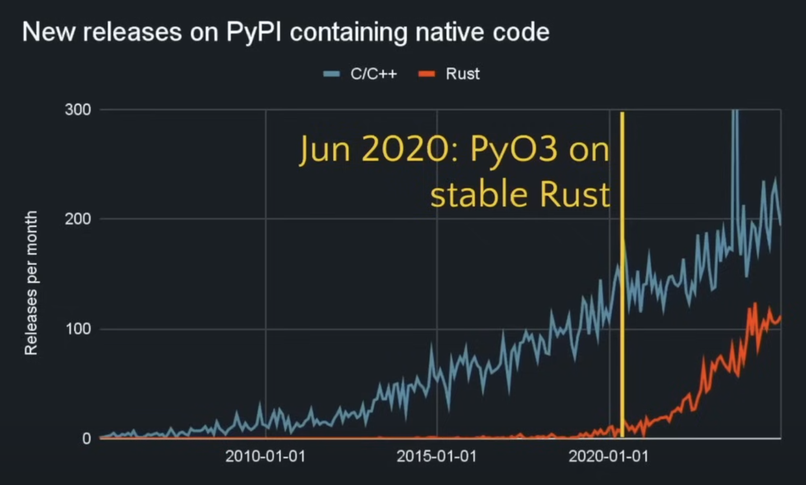
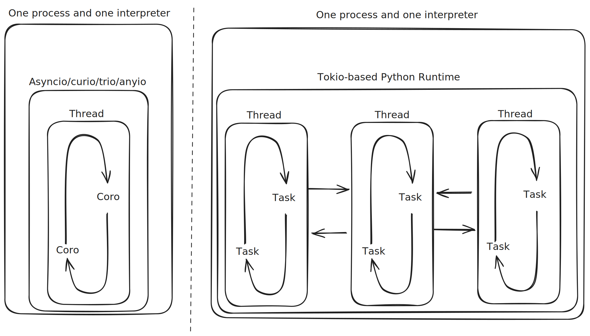
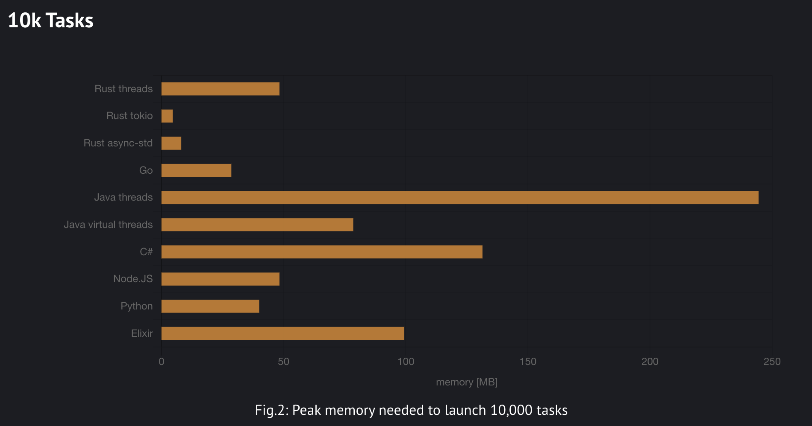

🦀 Rüstzeit
Asynchronous and Concurrent Optimisation in Python and Rust
Jamie Coombes
PyCon DE & PyData 2025
PyCon: Rust
23. - 25. April 2025
Darmstadtium, Darmstadt, Deutschland
- Main Talk Question
Python/Rust Interop and David Hewitt's free-threaded python atop Tokio question.
- Asynchronous Concurrency
Exploring async foundations through Rayon and Tokio in Rust, compared with Python's approaches.
- Case Study: A million monkeys at a million typewriters
Parallelising and benchmarking a genetic algorithm for evolving text into Shakespeare quotes.
- Conclusion
Exploring the future of Python/Rust Interop and the potential for free-threaded Python atop Tokio.
Test Mermaid Diagram
↓ Press down for more examples
Example Image

Example performance flame graph visualization
Example Complex Diagram
Python-Rust interop architecture diagram
Python/Rust Interop Growth in 2025
- Rust language as preferred developer-experience for writing native python extensions.
- RIIR - Rewrite It In Rust - for 10x-80x* performance improvements
- PyO3 is the most popular Rust library for Python interop.
- Maturin is the most popular tool for building and distributing Rust Python packages. *performance benchmarking is hard, see flame graphs later
Rust/Python Interop Growth in 2025
The Main Talk Questions
"Do we want to expose the tokio event loop as the basis for a Python async runtime?"
— David Hewitt @davidhewittdev - Rust Nation UK 2025
"How will free-threaded Python lead to better parallel code?"
- me, today, right now
Free-threaded Python + Tokio = ??
Free Threading in Python
Python 3.13 shipped an
- Expected to become the default in a few years
- PyO3 supports 3.13t fully
- Rust's Send + Sync traits make it straightforward to reason about threading issues
A multi-threaded tokio-based Python runtime could be...
Memory Efficient (and hence scalable)
Image source: Pkolaczk's memory-consumption-of-async
...well past os.cpu_count() threads
Image source: Pkolaczk's memory-consumption-of-async
Typed to prevent data races
- Rust's ownership model guarantees thread safety at compile time
- Rich ecosystem of threading primitives (std::sync, parking_lot, crossbeam)
- Threading can complement or replace async patterns
Note: While Rust prevents data races, it can't prevent all concurrency bugs (deadlocks, algorithmic issues)
Faster
so you add :rocket: to your project README
okay, but I really like python
what are the multi-threaded async alternatives?
well there is threado...
but threado is deado
maybe ask @dabeaz to bring it back for 3.14t or 3.15t?
or just do dabeaz's summer of rust and create a tokio-based python runtime?
How do rust and python think about concurrency and parallelism?
Async Programming Foundations
Concurrency vs Parallelism
Concurrency vs Parallelism
"If something happens in parallel, then it also happens concurrently, but the opposite is not true"
Async Programming Foundations
Concurrency vs Parallelism
Concurrency vs Parallelism
"If something happens in parallel, then it also happens concurrently, but the opposite is not true"
CPU-bound vs IO-bound Tasks
CPU-bound
- Video export
- Image processing
- Complex calculations
IO-bound
- Network downloads
- Database queries*
- File downloads*
*in reality, most tasks are a mix of both
Evolution of Python's Async Models
pre-generators] --> B[Twisted
with generators] B --> C[asyncio] C --> D[Trio] D --> E[anyio]
↓ Press down for examples
Twisted (pre-generators)
from twisted.internet import reactor, defer
def get_data():
d = defer.Deferred()
# Simulate async operation
reactor.callLater(1, lambda: d.callback("Result"))
return d
def handle_result(result):
print(f"Got: {result}")
reactor.stop()
def handle_error(failure):
print(f"Error: {failure}")
reactor.stop()
d = get_data()
d.addCallbacks(handle_result, handle_error)
reactor.run()Callback-based approach using Deferreds
Twisted with generators (inlineCallbacks)
from twisted.internet import reactor, defer
from twisted.internet.defer import inlineCallbacks
@inlineCallbacks
def async_operation():
try:
result1 = yield get_data()
result2 = yield get_more_data(result1)
print(f"Final result: {result2}")
except Exception as e:
print(f"Error: {e}")
finally:
reactor.stop()
reactor.callWhenRunning(async_operation)
reactor.run()Generator-based coroutines using yield
asyncio (Python 3.5+)
import asyncio
async def get_data():
await asyncio.sleep(1) # Simulate async operation
return "Result"
async def main():
try:
result1 = await get_data()
result2 = await process_data(result1)
print(f"Final result: {result2}")
except Exception as e:
print(f"Error: {e}")
asyncio.run(main())Native coroutines with async/await syntax
Trio (Structured Concurrency)
import trio
async def connect(addr):
# ... connection attempt logic
return socket
async def attempt_connect(socket_info, addr, attempt_failed):
try:
socket = await connect(addr)
# Signal success, cancel other tasks
return socket
except Exception:
# Signal this attempt failed
await attempt_failed.set()
raise
async def main():
with trio.move_on_after(10): # Timeout for all operations
async with trio.open_nursery() as nursery:
for addr in addresses:
attempt_failed = trio.Event()
nursery.start_soon(attempt_connect, socket_info, addr, attempt_failed)
with trio.move_on_after(0.3): # Happy eyeballs delay
await attempt_failed.wait()
trio.run(main)Structured concurrency with explicit task management
anyio: Best of Both Worlds
- 2.4 million monthly downloads
- Reimplements Trio atop asyncio
- Powers httpx, FastAPI, Pydantic AI
- Channels for message passing (like Rust mpsc)
import anyio
async def main():
async with anyio.create_task_group() as tg:
for addr in addresses:
tg.start_soon(connect_to, addr)
anyio.run(main)Structured Concurrency
Core Principles
- Tasks form strict parent-child relationships
- Child tasks cannot outlive their parent
- Errors propagate upward
- Clean cancellation
Benefits
- Prevents resource leaks
- Predictable error handling
- Simplified concurrent code
- Consistent cancellation model
↓ Press down for examples
Structured Concurrency: Python vs Rust
Python (Trio)
async with trio.open_nursery() as nursery:
nursery.start_soon(task1)
nursery.start_soon(task2)
# All tasks complete or cancelled hereRust (Tokio)
tokio::join!(
task1(),
task2()
);
// All tasks complete hereCancellation Models
Python (Trio)
with trio.move_on_after(5):
await long_running_task()
# Task is cancelled after 5 secondsRust (Tokio)
let timeout = tokio::time::timeout(
Duration::from_secs(5),
long_running_task()
).await;
match timeout {
Ok(result) => println!("Completed: {:?}", result),
Err(_) => println!("Timed out"),
}Inter-Task Communication
Message Passing vs Shared State
"Do not communicate by sharing memory; instead, share memory by communicating."
— Go proverb, applicable to both Python and Rust
↓ Press down for channel examples
Channels in Python and Rust
Python (anyio)
from anyio import create_memory_object_stream
# Create a bounded channel
send_channel, receive_channel = create_memory_object_stream(max_buffer_size=100)
# Producer
async with send_channel:
await send_channel.send(message)
# Consumer
async with receive_channel:
msg = await receive_channel.receive()Rust (Tokio)
use tokio::sync::mpsc;
// Create a bounded channel
let (tx, mut rx) = mpsc::channel(100);
// Producer task
tokio::spawn(async move {
tx.send(message).await.unwrap();
});
// Consumer task
if let Some(msg) = rx.recv().await {
println!("Got: {:?}", msg);
}Channel Types Comparison
Python
- asyncio.Queue
- anyio.create_memory_object_stream
- trio.open_memory_channel
- Limited by GIL for threading
Rust
- mpsc: Multi-producer, single-consumer
- oneshot: Single message delivery
- broadcast: Multi-producer, multi-consumer
- watch: Single-producer, multi-consumer
Rayon: Simple Parallelism in Rust
Iterator Traits
iter(): Sequential iterationpar_iter(): Parallel iteration- Drop-in replacement API
Key Features
- Work stealing scheduler
- Data race prevention
- Automatic chunking
↓ Press down for implementation example
Parallel Iterator Example
use rayon::prelude::*;
fn counter() -> u32 {
let mut counter: u32 = 0;
for _ in 0..1_000_000 { counter += 1; }
counter
}
fn main() {
let range: Vec = (0..8).collect();
let counter: u32 = range
.par_iter() // Parallel iteration
.map(|_| counter())
.sum();
println!("{counter}");
} Simply changing iter() to par_iter() enables parallel execution
Tokio: Async Runtime in Rust
- Event loop model
- Tasks, Spawning, and Futures
- Channels for communication
- Zero-cost abstractions
- Efficient resource utilization
↓ Press down for implementation examples
Basic Tokio Runtime Example
use tokio::time::{sleep, Duration};
#[tokio::main]
async fn main() {
let task1 = tokio::spawn(async {
sleep(Duration::from_millis(100)).await;
println!("Task 1 complete");
"result 1"
});
let task2 = tokio::spawn(async {
sleep(Duration::from_millis(50)).await;
println!("Task 2 complete");
"result 2"
});
let (result1, result2) = tokio::join!(task1, task2);
println!("Results: {:?}, {:?}", result1, result2);
}Concurrent execution with structured task management
MPSC Channel Example
use tokio::sync::mpsc;
#[tokio::main]
async fn main() {
let (tx, mut rx) = mpsc::channel(100);
tokio::spawn(async move {
for i in 0..10 {
tx.send(i).await.unwrap();
}
});
while let Some(i) = rx.recv().await {
println!("got = {}", i);
}
}Multi-producer, single-consumer channel with backpressure control
Python's Approaches to Parallelism
concurrent.futures
from concurrent.futures import ProcessPoolExecutor
import time
def cpu_bound_task(x):
# Simulate CPU-intensive work
total = 0
for i in range(10**7):
total += i
return x, total
def main():
start = time.time()
# Run tasks in parallel using multiple processes
with ProcessPoolExecutor() as executor:
results = list(executor.map(cpu_bound_task, range(8)))
duration = time.time() - start
print(f"Completed in {duration:.2f} seconds")ProcessPoolExecutor bypasses the GIL for true parallelism
asyncio for Concurrent IO
import asyncio
import aiohttp
async def fetch_url(url):
async with aiohttp.ClientSession() as session:
async with session.get(url) as response:
return await response.text()
async def main():
urls = [
"https://example.com",
"https://python.org",
"https://rust-lang.org",
]
tasks = [fetch_url(url) for url in urls]
results = await asyncio.gather(*tasks)
for url, html in zip(urls, results):
print(f"{url}: {len(html)} bytes")Concurrent IO operations with asyncio
Future: InterpreterPoolExecutor with Free-Threaded Python
# Conceptual example with Python 3.13+ (free-threaded)
from concurrent.futures import InterpreterPoolExecutor
def cpu_bound_task(x):
return x * x
def main():
# Run on multiple Python interpreters in parallel
# Each with their own independent GIL
with InterpreterPoolExecutor(max_workers=8) as executor:
results = list(executor.map(cpu_bound_task, range(1000)))
print(f"Sum of results: {sum(results)}")Potential future with free-threaded Python
Happy Eyeballs Algorithm
Python (asyncio.staggered_race)
async def connect_to_site():
# Create connection coroutines for IPv4 and IPv6
connection_attempts = [
connect_to_ipv6(host),
connect_to_ipv4(host)
]
# Try each with delay between attempts
winner, index, others = await asyncio.staggered_race(
connection_attempts,
delay=0.3 # 300ms between attempts
)
return winner # First successful connectionRust (with tokio)
async fn connect_to_site() -> Result {
// Get all address candidates
let addrs = tokio::net::lookup_host(
(host, port)
).await?;
let mut last_err = None;
let mut delay = tokio::time::sleep(Duration::ZERO);
// Try each address with delay
for addr in addrs {
delay.await;
match tokio::net::TcpStream::connect(addr).await {
Ok(stream) => return Ok(stream),
Err(e) => {
last_err = Some(e);
delay = tokio::time::sleep(
Duration::from_millis(300)
);
}
}
}
Err(last_err.unwrap_or_else(|| /* ... */))
} Implementation of RFC 8305 for connection attempts
Structured Concurrency: Python vs Rust
"Structured concurrency ensures that when a function call returns, any child tasks it spawned have terminated."
↓ Press down for model comparison
Python's Model (Trio)
"All tasks are equal"
- Nursery pattern enforces structure
- Tasks must complete within their scope
- When scope exits:
- Wait for all tasks to finish
- If one errors, cancel others
- Error propagates to parent
Rust's Model (tokio, async-std)
"Parent-child relationship, but detached by default"
- Two task management approaches:
spawn: Detached tasksjoin!/select!: Structured tasks
- Tasks spawned with
tokio::spawncan outlive parent - Tasks in
join!follow structured pattern - No automatic cancellation on error
Code Comparison
Python (Trio)
async def parent():
# Explicit nursery for child tasks
async with trio.open_nursery() as nursery:
nursery.start_soon(child1)
nursery.start_soon(child2)
# All tasks guaranteed to be done here
print("All done!")Strict enforcement of structured concurrency
Rust (Tokio)
async fn parent() {
// Option 1: Detached tasks (not structured)
tokio::spawn(child1());
tokio::spawn(child2());
// Option 2: Structured with join!
let (result1, result2) = join!(
child1(),
child2()
);
println!("All done!");
}Offers both structured and unstructured options
Error Handling Differences
Python (Trio)
async def main():
try:
async with trio.open_nursery() as nursery:
nursery.start_soon(might_fail)
nursery.start_soon(another_task)
# If might_fail raises, another_task
# is automatically cancelled
except Exception as e:
# Error from child propagated here
print(f"Caught: {e}")Rust (Tokio)
async fn main() {
// With join! - errors don't cancel other tasks
let results = join!(
might_fail(),
another_task()
);
// Manual error handling
match results {
(Ok(_), Ok(_)) => println!("All succeeded"),
(Err(e), _) => println!("First failed: {}", e),
(_, Err(e)) => println!("Second failed: {}", e),
}Cancellation Patterns
Python (Trio)
async def main():
# Scope-based cancellation
with trio.move_on_after(5):
async with trio.open_nursery() as nursery:
nursery.start_soon(long_task)
# Outside the scope, all tasks are
# guaranteed to be stoppedRust (Tokio)
async fn main() -> Result<()> {
// Using select! for cancellation
select! {
r = long_task() => r?,
_ = tokio::time::sleep(Duration::from_secs(5)) => {
println!("Timed out");
Ok(())
}
}
// Using timeout
match timeout(Duration::from_secs(5), long_task()).await {
Ok(result) => result,
Err(_) => {
println!("Timed out");
Ok(())
}
}
}Key Differences
| Feature | Python (Trio) | Rust (Tokio) |
|---|---|---|
| Model | Strict structured concurrency | Hybrid (structured and unstructured) |
| Task Hierarchy | Tasks are equal within nursery | Parent-child, but can be detached |
| Cancellation | Automatic on scope exit or error | Manual (using select! or drop) |
| Error Handling | Propagates to parent, cancels siblings | Returns to caller, doesn't affect siblings |
| Syntax | Context managers (with/async with) | Macros (join!, select!) |
Potential: Free-threaded Python with Tokio
- Could combine Trio's structured model with Tokio's efficiency
- Tokio's scheduler could run Python tasks across threads
- Parent-child relationship would align with Trio's nursery model
- Challenges:
- Making cancellation behavior consistent
- Propagating errors properly
- Integrating Python's async/await with Tokio's execution model
This connects back to David Hewitt's question about free-threaded Python atop Tokio
Case Study: Genetic Algorithm
"A Million Monkeys at a Million Typewriters"
Evolving random text into Hamlet quotes
"Brevity is the soul of wit"
(Also the soul of optimization)
Key Parameters in Genetic Algorithms
- Population size: Controls exploration breadth
- Mutation rate: Enables discovering new traits
- Selection pressure: Balances exploitation vs exploration
- Crossover rate: Combines successful traits
Visualizing Crossover in High-Dimensional Space
- 40-character string = 40D vector
- Single-point crossover at position 15
- Combining orthogonal projections
Sequential Implementation
Core Components
- Population Management: Random initialization and generational tracking
- Fitness Calculation: Character-by-character matching
- Selection: Fitness-proportional sampling
- Reproduction: Crossover and mutation operations
↓ Press down for code implementation
Basic Genetic Algorithm
def evolve_text(target, pop_size=1000, mutation_rate=0.01):
# Create initial population
population = [''.join(random.choice(CHARS)
for _ in range(len(target)))
for _ in range(pop_size)]
generation = 0
best_fit = 0
while best_fit < len(target):
# Calculate fitness for each member
fitness_scores = [calculate_fitness(p, target)
for p in population]
# Selection and reproduction
new_population = []
for _ in range(pop_size):
parent1 = selection(population, fitness_scores)
parent2 = selection(population, fitness_scores)
child = crossover(parent1, parent2)
child = mutate(child, mutation_rate)
new_population.append(child)
population = new_population
# ... rest of implementationSequential implementation - basis for our parallel optimizations
Initial Parallelization Strategy
Pipeline model: fitness → selection → crossover/mutation
Identifying Parallelism Opportunities
- Fitness calculation: Embarrassingly parallel
- Selection: Limited parallelism (requires sorting)
- Reproduction: Moderately parallel
Tournament Selection
- Alternative to global sorting
- Independent tournaments = better parallelism
- Tunable selection pressure
- Natural fit for async/await pattern
↓ Press down for implementation
Async Tournament Selection
async def tournament_selection(population, fitness_func, tournament_size=5):
# Select random individuals for tournament
tournament = random.sample(population, tournament_size)
# Calculate fitness in parallel
tasks = [asyncio.create_task(fitness_func(ind))
for ind in tournament]
fitness_values = await asyncio.gather(*tasks)
# Return the winner
return tournament[fitness_values.index(max(fitness_values))]Concurrent fitness evaluation with minimal synchronization
Asynchronous Genetic Algorithm Design
Selection} B -->|Winners| C[Crossover] C --> D[Mutation] D --> E[Fitness
Evaluation] E -->|Next Gen| A E -->|Best| F[Output]
Reduced synchronization points
Optimized Population Data Structure
- Single central dictionary with generation index
- Memory efficiency considerations
- Automatic cleanup of older generations
↓ Press down for implementation details
Implementation Details
class Population:
def __init__(self, max_generations_to_keep=3):
self.members = {} # {generation: [members]}
self.max_generations = max_generations_to_keep
self.current_generation = 0
self.lock = asyncio.Lock()
async def add_member(self, member):
async with self.lock:
if member.generation not in self.members:
self.members[member.generation] = []
self.members[member.generation].append(member)
async def cleanup_old_generations(self):
async with self.lock:
generations = sorted(self.members.keys())
to_remove = generations[:-self.max_generations] \
if len(generations) > self.max_generations else []
for gen in to_remove:
del self.members[gen]Thread-safe population management with generational garbage collection
Performance Comparison
Key bottlenecks identified:
- Fitness calculation in Python
- GIL contention
- Memory allocation patterns
Evolution of Our Implementation
- Initial implementation
- Understanding execution model
- Tournament selection for parallelism
- Generation-aware asynchronous approach
Returning to the Initial Question
"Would Pythonistas benefit from free-threaded Python atop the Tokio runtime?"
My thoughts:
- Potential for substantial performance gains
- Challenges in API design and mental model
- Integration complexity considerations
Next Steps and Resources
Communities
- Discord: #python-rust-interop
- Reddit: r/rustpython
- GitHub: PyO3 organization
Learning Resources
- Rust Book
- Tokio Documentation
- asyncio Documentation
Your Contact Information:
email@example.com | @twitter_handle | github.com/username
Sources and Credits
- Rust programming language book, rustlings, rust by example
- Tokio glossary
- Arden labs: Fearless Concurrency in Rust series
- Piotr's performance benchmarking
- David Hewitt Rust Nation UK talk
- Evgenii Seliversov: Parallel Programming in Rust techniques
- Personal correspondence
- Claude assistance